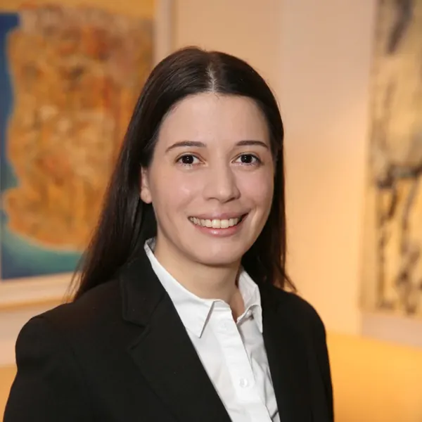
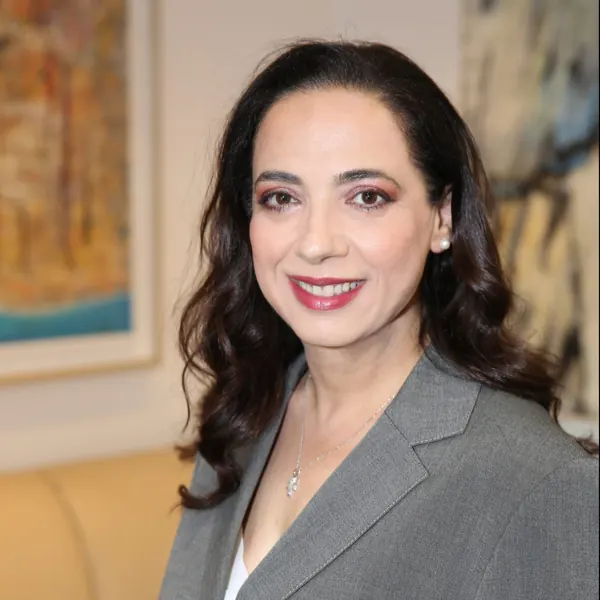
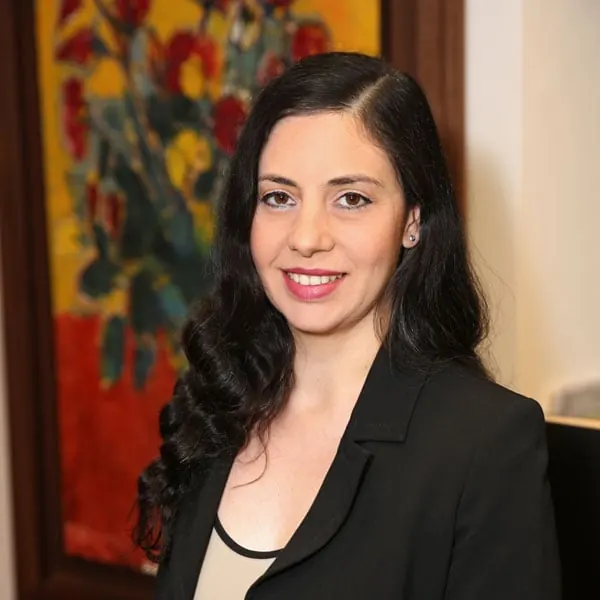
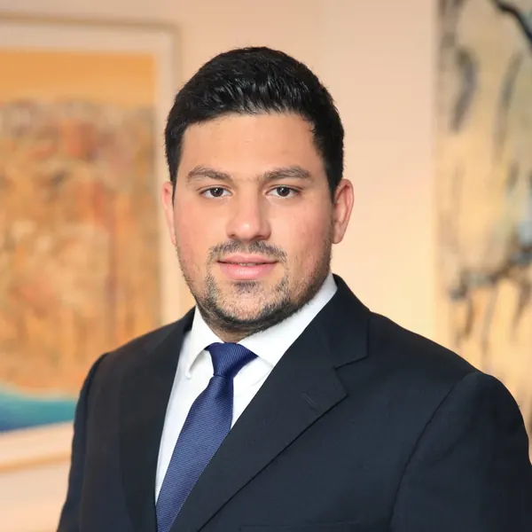
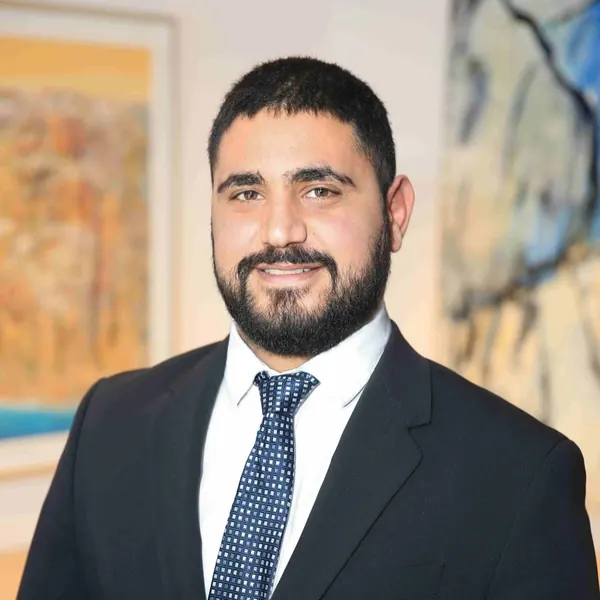
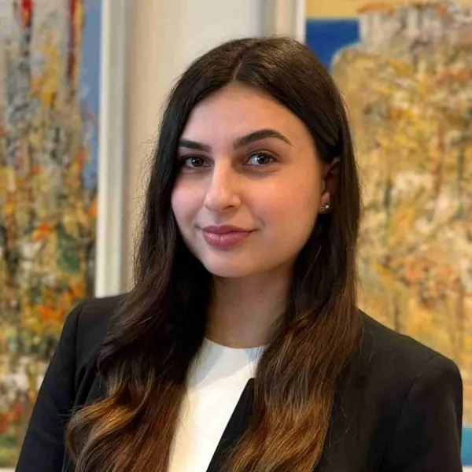
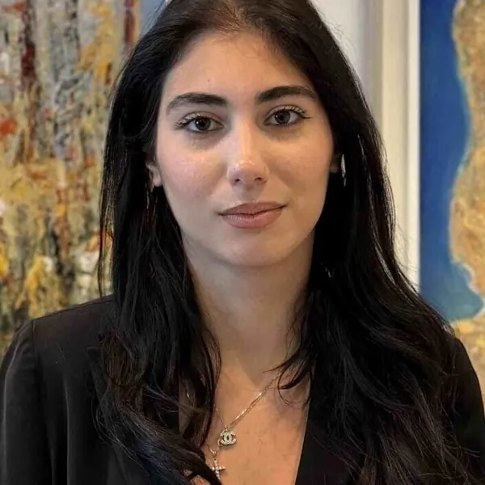

Our Lawyers
The lawyers of Christos Patsalides LLC: our partners, associates and trainee lawyers, working from our office in the heart of Nicosia.
Partners
07 people
-

Christos Patsalides
Founder and Managing Partner
-

Panayiotis A. Kakkouras
Senior Partner
-

Constantinos Kokkinoftas
Senior Partner and Head of the Litigation Department
-

Avgoustinos Tsarkatzis
Supervising Partner and Deputy Head of the Litigation Department
-

George Panayides
Partner
-

Varteni Kasapian
Partner
-

Michalina Kouppari
Junior Partner
Associates
11 people
-

Myria Nicolaou-Petrides
Senior Associate
-

Maria Chronia
Senior Associate
-
Christos Tsangaros
Senior Associate
-
Ioanna Patsalidou
Associate
-

Giorgos Kakkouras
Associate
-

Angeliki Flouri
Associate
-

Angelina Patsalidou
Junior Associate
-

Mairi Tsiachmatioti
Junior Associate
-

Marcos Economides
Junior Associate
-

Zinovia Hadjiantoniou
Junior Associate
-
Dimitris Zavou
Junior Associate
Trainee lawyers
03 people
-

Ioanna Efstathiou
Trainee Lawyer
-

Ronika Bilali
Trainee Lawyer
-

Nafsika Eleftheriadi
Trainee Lawyer
Speak with a member of our legal team
Contact our Nicosia office and tell us briefly what your matter concerns.